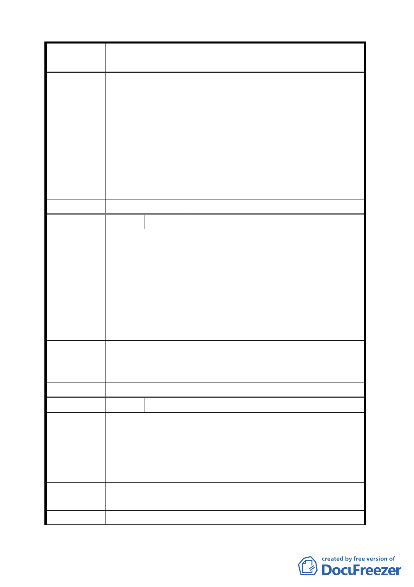

案
名
變更臺北市士林區至善段五小段 80、81、117 地號等加油站
用地為公園用地細部計畫案
的油氣，豈不是打折扣。
4.加油站離故宮出口、自強隧道出口太近，亦造成工安意外。
5.國家級博物館旁蓋 5 樓加油站，真的很可笑。
6.國營中油 10 年申請 3 次加油站未過，民營加油站萬興也遭
拒絕，所以為了故宮文物應不允許蓋加油站。
1.將至德園的荷花池延伸出來，應該非常漂亮。
建 議 辦 法 2.我曾經去過日本大阪市區，從路的一邊到另一邊，有漂亮
的溪流，當行人要走到對面時有漂亮的拱橋，溪流兩側皆
有綠樹。
委 員 會 決 議 同編號 2。
編 號 30 陳情人 徐銘陽
反對蓋加油站，蓋公園。
1.故宮周邊已有 6 家加油站，車程只要 5-10 分鐘。
2.近來加油站爆炸火災新聞不斷，危害故宮文物之虞。
陳
情
理
由
3.加油站設立在路口急轉彎處，會造成重大工安意外。
4.當前政府正推動節能減碳，及提倡文化觀光產業，加油站
設立不符合目前政策。
5.市府推動故宮瑰寶大道，觀光客走一走聞到令人作噁的油
氣，文藝氣息打折扣。
將加油站用地變更為公園與至德園合併在一起，希望能將至
建 議 辦 法 德園的荷花池延伸出來。因為若能在市區中看到荷花池，這
樣的景觀一定很美。
委 員 會 決 議 同編號 2。
編 號 31 陳情人 陳雄飛
1.由故宮路左轉至善路的車流量因加油站之設立將會造成搶
道。
陳 情 理 由 2.加油站本身腹地不夠，將迫使車輛佔用至善路，緊鄰公車
站牌，危險至極。
3.地上 5 層的加油站意向可疑。
建議辦法
1.停蓋加油站。
2.美化公園，可造建兒童帆船親子公園或戶外象棋園。
委 員 會 決 議 同編號 2。
45